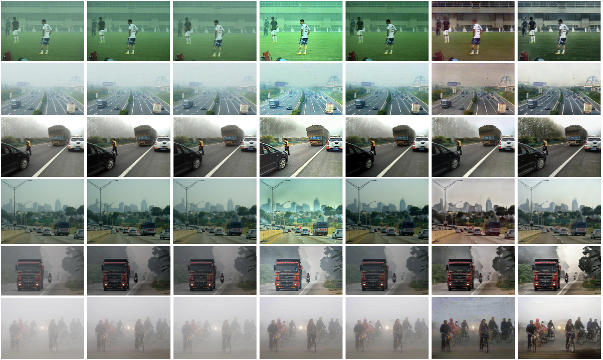

RIDCP: Revitalizing Real Image Dehazing via High-Quality Codebook Priors
1VCIP, CS, Nankai University
2Hisilicon Technologies Co. Ltd.
3S-Lab, Nanyang Technological University
CVPR 2023
Abstract
Existing dehazing approaches struggle to process real-world hazy images owing to the lack of paired real data and robust priors. In this work, we present a new paradigm for real image dehazing from the perspectives of synthesizing more realistic hazy data and introducing more robust priors into the network. Specifically, (1) instead of adopting the de facto physical scattering model, we rethink the degradation of real hazy images and propose a phenomenological pipeline considering diverse degradation types. (2) We propose a Real Image Dehazing network via high-quality Codebook Priors (RIDCP). Firstly, a VQGAN is pre-trained on a large-scale high-quality dataset to obtain the discrete codebook, encapsulating high-quality priors (HQPs). After replacing the negative effects brought by haze with HQPs, the decoder equipped with a novel normalized feature alignment module can effectively utilize high-quality features and produce clean results. However, although our degradation pipeline drastically mitigates the domain gap between synthetic and real data, it is still intractable to avoid it, which challenges HQPs matching in the wild. Thus, we re-calculate the distance when matching the features to the HQPs by a controllable matching operation, which facilitates finding better counterparts. We provide a recommendation to control the matching based on an explainable solution. Users can also flexibly adjust the enhancement degree as per their preference. Extensive experiments verify the effectiveness of our data synthesis pipeline and the superior performance of RIDCP in real image dehazing.
Method

Overview of our RIDCP.
During the training phase, we train the dehazing network on the data synthesized by our data generation pipeline, as illustrated in (a).
The network is based on the pre-trained HQPs codebook and the corresponding decoder $\mathbf{G}_{vq}$ of VQGAN.
We also design the Controllable HQPs Matching (CHM) operation for real domain adaptation by re-calculating the distance $d^{\hat{z}}_{k}=||\hat{z}-z_k||$ between features and HQPs.
(b) represents the distance re-calculation with two Voronoi diagrams, where the colored cells indicate belonging to better HQPs and the gray cells vice versa. Triangles represent features and star points represent HQPs. It can be seen that after the distance recalculation points that originally belonged to the gray cells are forced to be assigned to the colored cells by our CHM.
Visual Comparisons


Acknowledgements
This work is funded by the National Key Research and Development Program of China (NO.2018AAA0100400), Fundamental Research Funds for the Central Universities (Nankai University, NO.63223050), China Postdoctoral Science Foundation (NO.2021M701780). We are also sponsored by CAAI-Huawei MindSpore Open Fund.
BibTex
@inproceedings{wu2023ridcp,
title={RIDCP: Revitalizing Real Image Dehazing via High-Quality Codebook Priors},
author={Wu, Ruiqi and Duan, Zhengpeng and Guo, Chunle and Chai, Zhi and Li, Chongyi},
booktitle={Proceedings of the IEEE/CVF Conference on Computer Vision and Pattern Recognition},
year={2023}
}
Contact
Feel free to contact us at wuruiqi@mail.nankai.edu.cn